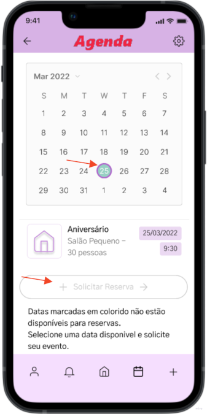

Design Thinking
É um processo utilizado por quem deseja aperfeiçoar seu processo de criação de forma simples, ágil e bem planejada; Metodologia utilizada para oferecer produtos e serviços de acordo com a real necessidade dos clientes para gerar e organizar ideias e, assim, encontrar soluções para os problemas;
Dividido em cinco fases de planejamento das quais utilizamos para o desenvolvimento deste trabalho.
Fase 1 - Empatia
Problema: Criar uma agenda online para efetuar alugueis de uma Sede Recreativa.
Objetivo: Aplicativo que mostre os dias que tem eventos agendados para os clientes e os funcionários. Permita pré-reservas de datas.
Demanda: O controle da agenda é feito por planilhas de excel localizados no escritório da empresa, sem acesso remoto ou online, isso dificulta a troca de informações em horário não comercial, entre os funcionários que trabalham na organização sobre atualizações feitas na agenda e aos clientes. Reservas são perdidas por falta de acesso ao calendário por parte dos clientes, que sem acesso a agenda, acabam planejando eventos em datas já ocupadas.
Visite meu quadro Miro e acesse todo o processo criativo e informações referentes ao aplicativo Agenda.
Fase 2 - Definição
O aplicativo foi pensado para ter três tipos de acesso: administrador, organização e associado. Cada nível de acesso tem funções específicas que suprem a necessidade de cada tipo de usuário. O protótipo desenvolvido em aula contempla apenas o nível associado, porém com as personas abaixo temos exemplos de perfis que pensei em atender com a aplicação futuramente.
Persona 1
Persona 2
Persona 3
Persona 4
Fase 3 - Ideação
Essa o início das fases práticas do projeto de design, onde foi desenhado o corpo da aplicação, pensado em suas funcionalidades, padrões, as tarefas que seriam disponibilizadas a partir dele. Na fase de ideação é a fase que temos ideias e a organizamos para então produzir o protótipo.
Nessa parte irei apresentar alguns dos materiais desenvolvidos, a versão completa está no meu quadro do Miro que você pode acessar clicando aqui.
Crazy8
Storyboard
Padrões de Projeto
A lista completa se encontra no meu quadro, aqui estão os padrões que considero mais importantes da aplicação. Foram oito padrões identificados dentre os vários que podem ser citados no aplicativo, e aqui citarei dois.
Lista de Tarefas
Por mais que o protótipo desenvolvido atenda apenas a um dos três publicos desejados, ele tem várias tarefas que podem ser feitas, selecionei algumas para mostrar aqui. A versão completa da lista de tarefas está no meu quadro do Miro, consulte-o para conferir.
Acessar a Agenda
Utilizar o botão na tela inicial indicando "Agenda" ou o ícone de calendario no menu inferior.
Acessar Histórico de Eventos
Utilizar o botão na tela inicial indicando "Meus Eventos", ou tocar sobre o card "Minhas reservas" na tela inicial, ou tocando sobre o card do evento exibido dentro da área "Minhas Reservas" na tela inicial.
Solicitar uma Nova Reserva
Existem diversas formas de fazer essa tarefa. Utilizando o botão com ícone de adição ( + ) no menu inferior. Acessar a tela da Agenda, selecionar uma data no calendário e prosseguir pelo botão "Solicitar Reserva". Deve preencher o formulário e enviar, a data da reserva pode ser alterada no campo "Data do Evento".
Caso o botão "Solicitar reserva" esteja desabilitado é porque a data desejada já está ocupada, assim não poderá seguir com a solicitação conforme a imagem abaixo.
A lista completa conta com um total de onze tarefas com muito mais funcionalidades como acessar o perfil, notificações, login, configurações, visite todas as tarefas para ter mais detalhes.
Acessibilidade
A acessibilidade é muito necessária neste trabalho por conta do publico principal que se busca ser atingido, é um público de mais idade, não são idosos mas tem idade avançada em comparação a quem é mais familiarizado com tecnologia em geral, ou seja, um publico mais jovem. Dessa forma alguns cuidados foram tomados tanto em padrões como em acessibilidade no aplicativo seguindo o guia WCAG traduzido em português. A acessibilidade em maioria foi aplicada no site, seguindo o modelo eMag brasileiro .
Acessibilidade no Aplicativo
1.4.1 Uma mensagem de erro deve trazer cores, ícone e uma mensagem informando como corrigir. No aplicativo quando uma reserva não é aprovada gera uma notificação pedindo para entrar em contato com o escritório, por ser pré-reservas precisa de aprovação humana e avaliação das solicitações então o escritório deve ser procurado.
2.4.5 Devem existir mais de uma opção para encontrar um conteúdo. Vários atalhos e botões foram criados como caminho para as telas, inclusive um menu inferior no aplicativo para construir links e acessar facilmente qualquer área do aplicativo.
2.5.5 O tamanho das áreas acionáveis por toque devem ser de no mínimo 44x44 pixels de espaçamento, a não ser quando está em um texto. As áreas clícaveis foram padronizadas em blocos de 44x44px ou com altura 44px e largura maior que esse tamanho.
Acessibilidade no Site
1.3 Utilizar corretamente os níveis de cabeçalho.
1.4 Ordenar de forma lógica e intuitiva a leitura e tabulação.
1.5 Fornecer âncoras para ir direto a um bloco de conteúdo.
1.8 Dividir as áreas de informação.
2.1 Disponibilizar todas as funções da pagina via teclado.
3.1 Identificar o idioma principal da página.
3.3 Oferecer um titulo descritivo e informativo à pagina.
3.6 Fornecer alternativa em texto para as imagens do sítio.
4.1 Oferecer contraste mínimo entre plano de fundo e primeiro plano
4.3 Permitir redimensionamento sem perda de funcionalidade
Fase 4 - Protótipo
Depois de pensar no corpo da aplicação, planejar as tarefas, ter ideias sobre o que se quer produzir em telas, parte-se para o desenvolvimento do protótipo. Foi feito apenas o nível de acesso de associado por conta de tempo de desenvolvimento e de recursos disponíveis em nível de programação. Você pode acessar o protótipo abaixo pela extensão, ou pelo link do protótipo do Figma clicando aqui, ou pode encontrar o link no meu quadro do Miro.
Fase 5 - Testes
Os testes foram aplicados em cinco pessoas com idades variadas para ter uma ideia real do publico que irá utilizar o produto, desde jovens até idosos, onde a grande parcela de usuários está entre idades 30 a 50 anos. O protótipo teve score 73,5 sem aplicação de recursos de acessibilidade avançados que poderiam ajudar na utilização do aplicativo.
Resultado: Aplicativo classificado na nota C, adjetivo OK, aceitação Marginal para Aceitável e NPS Passivo.